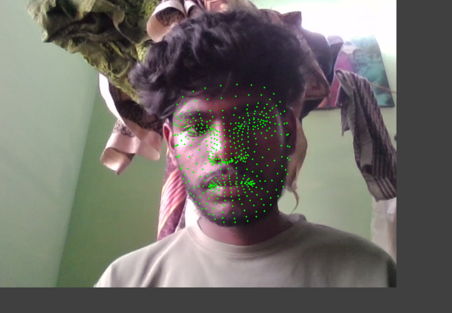
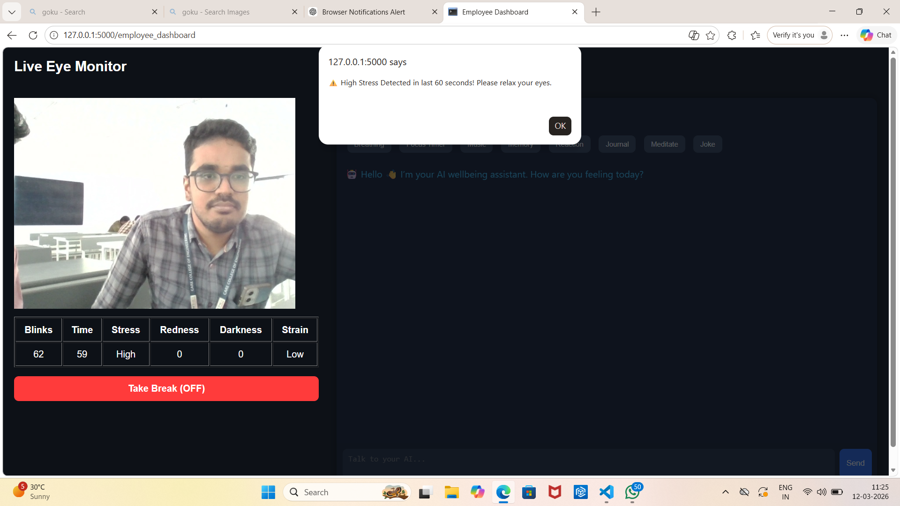
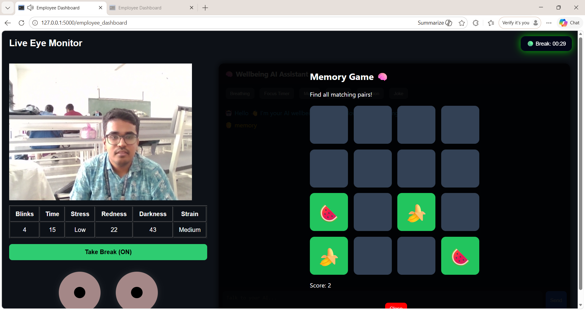

AURA (Adaptive User Response Assistant for workplace well-being ) is an AI-based employee wellness and stress monitoring system developed to improve workplace productivity and ensure employee well-being. With the increasing adoption of remote and hybrid work environments, monitoring employee stress in real-time has become a significant challenge for organizations. This system aims to address that challenge by providing an intelligent and automated solution for detecting and managing stress levels.


